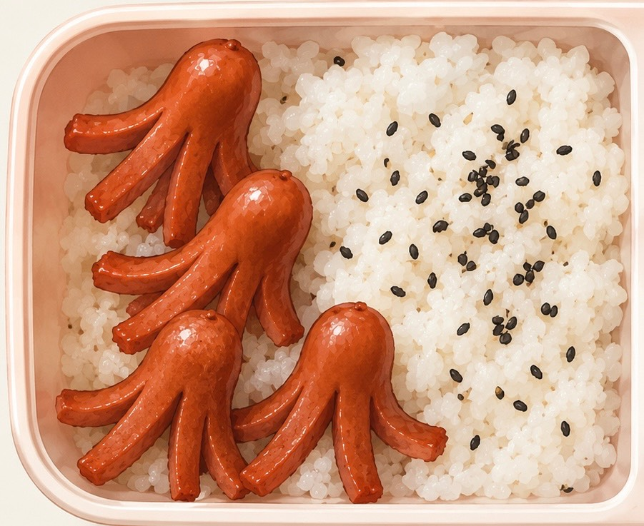
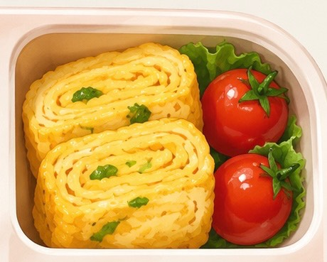
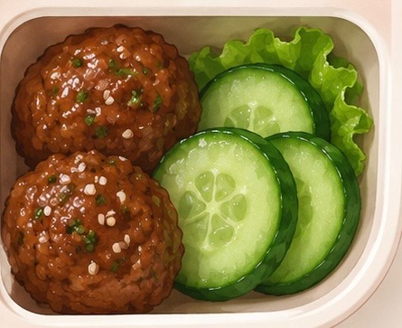

Welcome to my Bento Site! This is a simple guide to packing traditional lunch boxes, making quick side dishes, and arranging fresh ingredients so they look good. Since it’s October, we have Jack-O-Lantern Pumpkin Sushi recipe for the Halloween season, along with Spooky Ghost Nigiri.